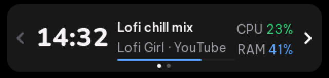
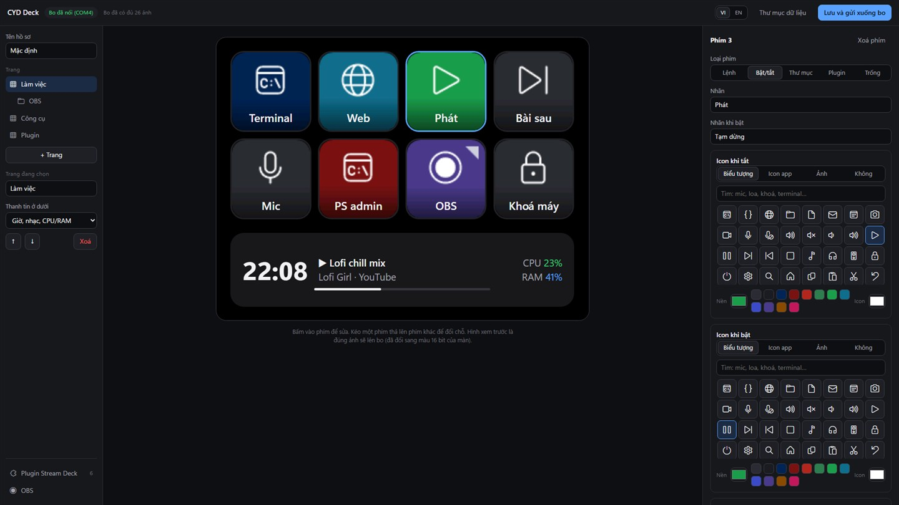
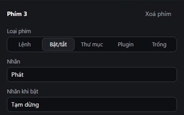

Bài đang phát hiện trên mạch
Tên bài, kênh và thanh tiến độ nằm ngay dưới phím. Lấy từ Spotify, YouTube trên trình duyệt và VLC.

8 phím cảm ứng có ảnh màu cho nhạc, OBS và plugin Elgato. Nạp ngay trên Chrome hoặc Edge qua cáp USB.
CydAgent mở trang cài đặt trong cửa sổ Edge. Bấm một phím để đổi nhãn, biểu tượng và lệnh, kéo thả để đổi chỗ, rồi bấm Lưu và gửi xuống mạch.
Xem cách cài agent
Cách mạch nối với máy tính
Mạch chỉ cần một sợi cáp USB nối vào máy tính: không Wi‑Fi, không mở cổng tường lửa. Phím, ảnh và thư mục lưu trong flash của mạch, rút điện ra cắm lại vẫn còn.
Tên bài, kênh và thanh tiến độ nằm ngay dưới phím. Lấy từ Spotify, YouTube trên trình duyệt và VLC.

Đổi cảnh, ghi hình, stream và tắt tiếng nguồn. Phím của cảnh đang phát có viền xanh.
Cài thẳng file .streamDeckPlugin của Elgato. Plugin viết bằng C++, C#, Node.js hay HTML đều chạy.
Windows hỏi UAC một lần lúc lưu. Sau đó bấm phím là cửa sổ admin mở ngay, không hỏi lại.
ILI9341, 2.8″, 320×240. Bản chính, đã thử trên mạch thật.
Chạy tốtILI9341 mã 81 81 B3. Firmware tự đảo màu.
Chạy tốtST7789. Trang tự nạp bản cyd2usb, chưa thử trên mạch thật.
Thử nghiệmKhác chân màn và cảm ứng, cần sửa sơ đồ chân trong firmware.
Chưa hỗ trợBản mới nhất v2.0 · Xem thay đổi
Trang chỉ đếm ẩn danh kết quả nạp và loại màn, không dùng cookie.
Giải nén vào một thư mục cố định rồi chạy từ đó. Bản mới thì giải nén đè lên, bộ phím vẫn giữ.
Windows chặn vì file chưa ký số: bấm Thông tin thêm, rồi Vẫn chạy. Icon hiện ở khay.
Nhấp đúp icon ở khay để mở trang cài đặt, sửa phím rồi bấm Lưu và gửi xuống mạch.

Không thấy câu của bạn? Mở một issue trên GitHub, kèm nhật ký nạp và ảnh màn mạch.
Báo lỗi trên GitHubĐổi cáp có dây dữ liệu, thử cổng USB khác, rồi cài driver CH340.
CydAgent đang giữ cổng: ở khay, chọn Tạm nhả cổng COM 10 phút rồi nạp lại.
Giữ nút BOOT, bấm nạp lại, thả tay khi nhật ký báo đã kết nối.
Nạp lại bằng Cài mới, xoá trắng. Vẫn lỗi thì mở issue kèm ảnh màn.
Vừa nạp xong thì chuột phải icon ở khay, chọn Nối lại ngay.
CydAgent.exe bị tách khỏi thư mục web. Giải nén cả file zip rồi chạy lại.